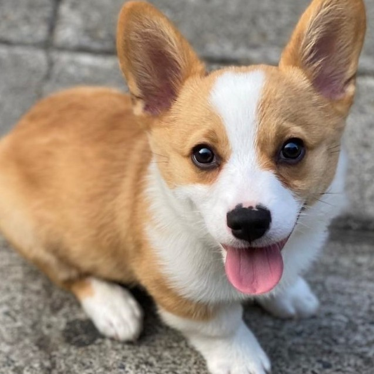

the cutest dogs in the world
Pembrokeshire and Cardiganshire are adjoining historical agricultural counties in South West Wales. Welsh Corgis were cattle herding dogs; the type of herding dog referred to as "heelers", meaning that they would nip at the heels of the larger animals to keep them on the move. The combination of their low height off the ground and innate agility of Welsh Corgis would allow them to avoid the hooves of cattle. The term "Corgi" means either cur dog or dwarf dog (cor = dwarf, gi = lenitive of ci, dog) in the Welsh language, which was not intended as an insult to the dog's size, rather as a purely descriptive term. Different tales have been told of the Corgi's origin: some believe that the two modern breeds evolved from a shared ancestry, while others attribute the import of the Pembroke Welsh Corgi to Flemish weavers starting around the 10th century.Further theories on the origin of the Pembroke variety suggest that they may have originated from central European herding breeds from the area around modern Germany. Depending on the time period when these dogs were imported to Wales, they could have been either Deutsche Bracken, or Dachshund.
The Cardigan Welsh Corgi has been attributed to the influences of Nordic settlers in the region. Dogs of similar dimensions exist in modern Scandinavia, called the Swedish Vallhund, and it is claimed by some historians that these two breeds share a common ancestor. In the late 19th century, farmers in began to switch from cattle to sheep but the corgi is not suited for working sheep. Similarities between the Welsh Corgis have been attributed to cross-breeding between the two, or simply selected breeding from those who wished to have the Cardigan variety appear closer in nature to the Pembroke.

There are two breeds of Welsh Corgis, the Cardigan and the Pembroke, each named for the county in Wales where it originated. The dogs share several similar traits, such as their coats, which are water-resistant and shed on average twice a year. The body of the Cardigan is slightly longer than that of the Pembroke; both breeds have short legs, placing their bodies close to the ground. But they are not as square in outline as a typical Terrier, or have an elongated body as great as that of a Dachshund. There are only minor differences in the shape of the head, both appear fox-like. The head of a Cardigan Welsh Corgi is typically larger than that of an equivalent Pembroke, and has a larger nose. It can take a few days following birth for the true colour of a Corgi's coat to appear, and this is particularly evident in those with tricolour or black and tan markings.
Corgis in the modern era often compete in dog agility trials, obedience, showmanship, flyball, tracking, and herding events. Herding instincts and trainability can be measured at non-competitive herding tests. Cardigan and Pembroke Corgis exhibiting basic herding instincts can be trained to compete in herding trials – known colloquially as a "mad run". Welsh Corgis were once used to guard children.

According to the Kennel Club Purebred Dog Health Survey conducted in 2004, the two breeds had similar average lifespans: the median age at death was 12 years 3 months for Pembrokes, and 12 years 2 months for Cardigans. The main causes of death were similar in both breeds: the primary causes were canine cancer and old age. However, the Pembroke breed showed a higher proportion of deaths attributed to either kidney failure or urethral obstruction.The survey showed that the breeds suffer from similar rates of ongoing health conditions, with one exception. Whereas more than a quarter of Pembroke Welsh Corgis surveyed suffered from some type of eye condition, only 6.1% of the Cardigan Corgis did. Eye conditions typical in the Corgi breeds include progressive retinal atrophy, which occurs more often in dogs over six years of age, and canine glaucoma, which again is more common in older dogs. Cataracts in corgi are treatable with cataract extraction. Similar percentages in the survey were seen in both breeds for issues relating to reproduction, such as requiring caesarian sections and having false pregnancies. Further similarities were also seen related to musculoskeletal issues, including arthritis. However, Hip dysplasia, common in some types of dogs, is rare in the Corgi breeds.

Queen Elizabeth II has long been associated with Corgis. After a visit to Thomas Thynne, 5th Marquess of Bath in 1933, Princesses Elizabeth and Margaret made it well known to their family that they liked the Corgis owned by the Marquess. Their father, Prince Albert, Duke of York (later George VI), purchased the Pembroke Corgi Rozavel Golden Eagle, from the Rozavel kennels in Surrey. It was renamed Dookie.
Princess Elizabeth was then given a Pembroke Corgi of her own, named Susan, for her 18th birthday in 1944. She had a strong connection to the dog, which was hidden under rugs in the Royal Carriage following her wedding to Prince Philip.Susan became the progenitor of all the Corgis owned by the Royal Household since. The Queen has bred ten generations of dogs from Susan, owning personally more than 30 of the dogs which were either pure-bred Pembroke Welsh Corgis or crossbreed Corgi/Dachshunds called Dorgis. It was reported in 2018 that the last of the Corgis belonging to Queen Elizabeth had passed away.
Corgis have also appeared on screen, stage and in novels. Corgis as characters were incorporated into the storybook fantasies Corgiville Fair, The Great Corgiville Kidnapping, and Corgiville Christmas of American author and illustrator Tasha Tudor. In 1963, a Corgi was featured in the Walt Disney film Little Dog Lost, which led to an increase in popularity for the breed within the United States. A theatrical adaptation took place of Welsh author Roald Dahl's The BFG which toured the UK in 1991 required several different Corgis to perform on stage as those of Queen Elizabeth. The Queen's Corgi is a Belgian animated film depicting the Queen's Corgis.
In the anime Cowboy Bebop, the crew has a super-intelligent Pembroke Welsh Corgi, Ein, on their ship.
The Top Shelf graphic novel Korgi plays on the folklore tradition of the Corgi as a faerie draft animal. It features the "Mollies" (fairy-like beings) who live in close relationship with the land and their Korgi friends, who are based on and resemble the Welsh Corgi breeds.
The American animated TV series Infinity Train features a country of anthropomorphic corgis known as Coriginia ruled by King Atticus, styled "Uniter of the Cardigans and Pembrokes".